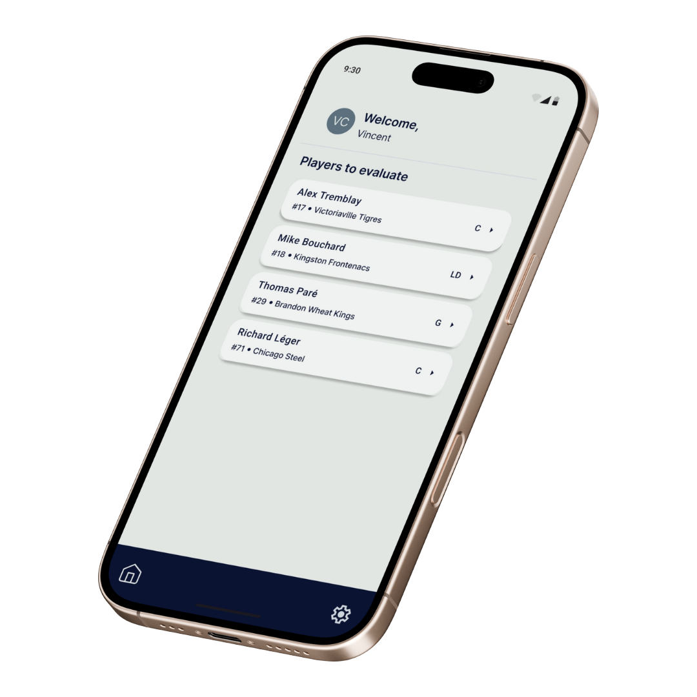
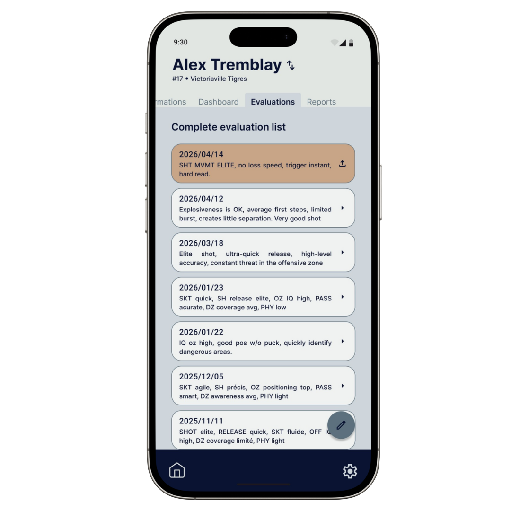
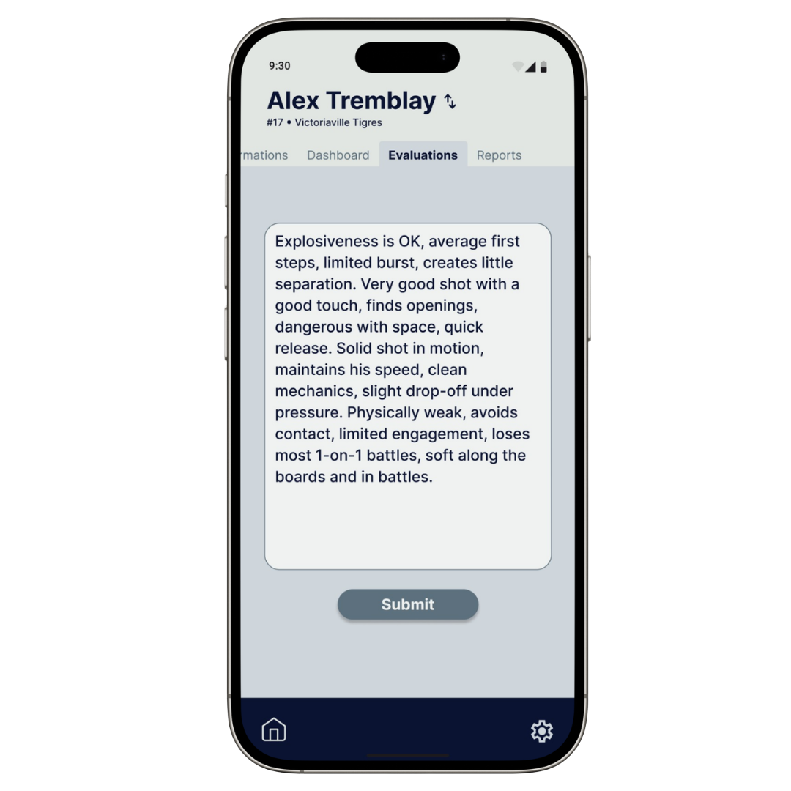
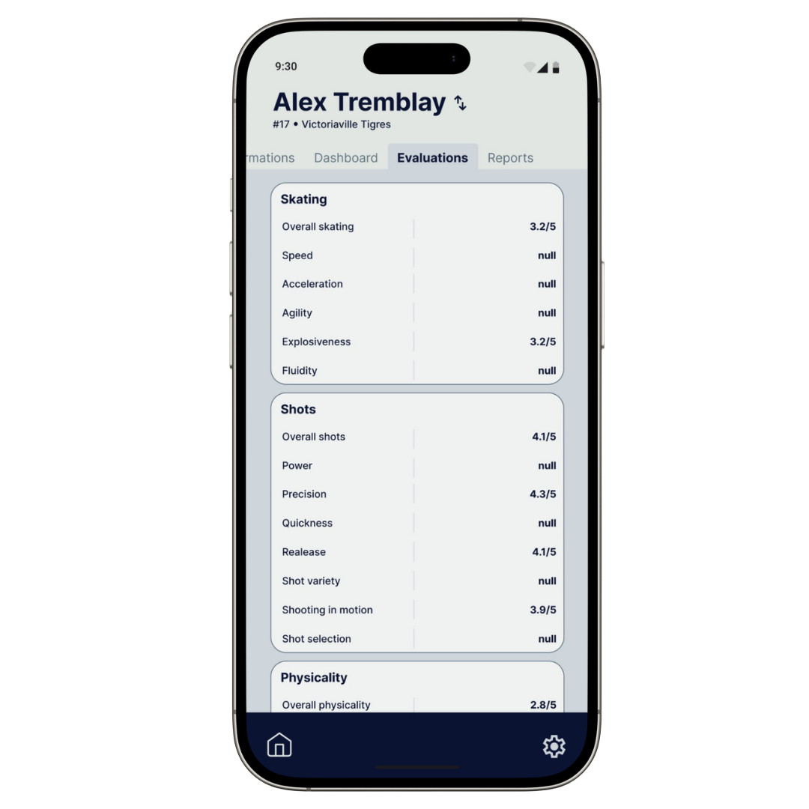

Gabriel Lavoie
Co-founder
With nearly 6 years of experience in technology and process optimization, Gabriel combines a focus on user experience with operational understanding to design reliable solutions tailored to users' needs.
Keep your way of evaluating a player. HeadsUp organizes your observations, structures your reports, and makes it easier to share your expertise across the organization.
No commitment. We personally respond within 48 hours.

Scattered notes, readable only by the person who took them. The rest of the team has to guess.
Every scout has their own evaluation scale. Comparing two players takes an hour, and the numbers don't mean the same thing.
The GM reads 12 pages, remembers 2 lines, and moves on to the next one. Too long, not visual enough.

As usual, you take your notes your way in the app — abbreviated, in your own style.
Your raw notes become common evaluation scales across the entire team.


A clear and structured player profile, aligning your entire organization around the observations.
Images shown are for illustrative purposes only. They illustrate the concept and may differ from the final product.
Join our pilot program and discover how HeadsUp transforms your scouting notes into structured evaluations, while keeping your scouting expertise at the heart of the process.
Request access
A player's profile is built over time. HeadsUp highlights trends, discrepancies, and areas that deserve your attention to better guide your next observations.
Discover the different indicators that help you better understand a player's development and know where to focus your attention.
Images shown are for illustrative purposes only. They illustrate the concept and may differ from the final product.
Reports, observations, and player evaluations represent strategic information for your organization. Data security is therefore at the heart of HeadsUp's design.
Your organization's data is accessible only to authorized users.
Data is protected during transmission and storage to limit unauthorized access.
Your reports and observations remain linked to your organization and are not made public.
Founded in 2026, Solutions Kaho develops technological solutions
designed to address real-world needs.
Our approach is based on a simple idea:
Understand users' realities in order to simplify their work by creating tools that deliver tangible results.
Co-founder
With nearly 6 years of experience in technology and process optimization, Gabriel combines a focus on user experience with operational understanding to design reliable solutions tailored to users' needs.
Co-founder
With more than 5 years of experience developing technological solutions, Vincent turns real-world needs into simple, reliable, and effective solutions. He combines technical expertise with a results-oriented approach to turn ideas into useful and accessible products.
HeadsUp is currently a proof of concept. If you evaluate players at the junior, college, or pro level, we'd love to put the tool in your hands and get your feedback.
Request access